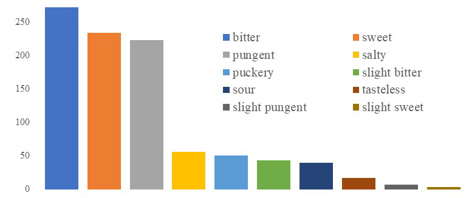

中医药处方及中草药数据分析和挖掘
中医药是中华文化的重要组成部分，在数以千年的发展过程中形成了完整的知识理论体系，同时也保留了大量经典的中医药书籍和处方，形成了十分具有研究价值的数据。为了更好的挖掘和分析中医药处方数据的价值，本文收集了《中国药典》以及经典古籍中的草药和处方数据并对其进行了清洗整理，在此基础上开展了两项研究工作：
(1)利用常见数据挖掘技术对中医药各数据属性内容之间的规律和联系进行了探索，比如处方和草药、草药对、功能和症状等属性之间的关系。这不仅可以了解、验证中医经典理论和问诊原理，如理法方药、草药对搭配等
(2)通过了解探索不同GAN的结构以及实验效果，比如GAN、CGAN、SeqGAN、MaskGAN等，参考了适合于离散文本序列生成的网络结构，探索出了适合于处方文本序列生成的模型结构，然后搭建了适合的生成对抗网络并调整了网络结构，通过整理输入训练数据集生成了新处方。
| 草药的功能 | 草药的性质 |
|  | |
| 草药的归经 | 草药的味道 |
中医药处方数据探索分析系统